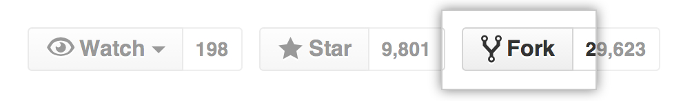

Intro to Git and GitHub
Slides: bit.ly/gdic-git-workshop-2016
Welcome!
Girl Develop It is here to provide affordable and accessible programs to learn software through mentorship and hands-on instruction.
Some "rules"
- We are here for you!
- Every question is important.
- Help each other.
- Have fun!
Welcome!
Tell us about yourself.
- Who are you?
- What do you hope to get out of the class?
- Favorite local restaurant?
What we will cover today
- What is version control and why should we care?
- Basics of Git: the essential commands
- GitHub (or, a little Git between friends)
What is version control?
Version control allows you (and/or your team) to:
Collaborate
Create anything with other people, from academic papers to entire websites and applications.
Track and revert changes
Mistakes happen. Wouldn't it be nice if you could see the changes that have been made and go "back in time" to fix something that went wrong?
You already manage versions of your work!
Do you have files somewhere that look like this?
Resume-September2013.docx
Resume-for-Duke-job.docx
ResumeOLD.docx
ResumeNEW.docx
ResumeREALLYREALLYNEW.docx
Brief History of Version Control
1990s -- CVS (Concurrent Version Systems)
2000s -- SVN (Apache Subversion)
2005 -- Git
Version Control Types
Centralized Version Control
Examples: CVS, SVN
One central server, each person checks out and merges changes to main server.
Distributed Version Control
Examples: Git, Mercurial
Each person has a local copy of the project, which they can then reconcile with the main server.
Centralized Version Control
Examples: CVS, SVN

Distributed Version Control
Examples: Git, Mercurial

Version Control Distribution
 Source: Google Trends
Source: Google Trends
Why Git?
- Fast! Access information quickly and efficiently.
- Scalable! Enables potentially thousands (millions!) of developers to work on single project.
- Distributed! Everyone has their own local copy of the shared files and the history.
- Local! You don't need a network connection to use it. You only need a remote server if you want to share your code with others (e.g., using GitHub).
- Features such as branches and selectively staging changes.
Install Git

Set Up Git
Set your name and email:
$ git config --global user.name "YOUR_NAME_HERE"
$ git config --global user.email "YOUR_EMAIL_HERE"
View your Git config:
$ git config --list
Git Vocabulary
- A repository is essentially your project's folder. It includes all your project's files and its history.
- A commit is an object that holds information about a particular change to your project's files.
- A hash is a unique ID associated with an individual commit.
Git Commands
- init
- clone
- add
- commit
- status
- log
- branch
- checkout
- fetch
- merge
- pull
- push
Create A Local Repository
1. Go to your home directory.
$ cd ~/
OR
$ cd Users\username
2. Create a "working directory".
$ mkdir my-repo
$ cd my-repo
3. Initialize your directory as a local Git repository.
$ git init
$ git status
Add Files
1. Create a new file in your folder called "kitten.txt".
$ touch kitten.txt
2. Check repo status.
$ git status
3. Tell Git to track our new file with the "git add".
$ git add kitten.txt
$ git status
Success! Your file is now tracked by Git.
Changes and Commits
1. Open kitten.txt, add some text, and save it.
$ git status
2. Stage your changes and check the status.
$ git add kitten.txt
$ git status
3. Commit the changes. Include a commit message that describes the changes.
$ git commit -m "Initial commit. Add kitten.txt to repository."
What did we just do??
How is this all different than just saving a file?
- When we add a new file, we tell Git to add the file to the repository to be tracked.
- This is also called staging a file. A snapshot of our changes is now in the staging area, ready to be saved.
- A commit saves changes made to a file, not the file as a whole. The commit will have a hash so we can track which changes were committed when and by whom.
Look at your progress
$ git log
commit 6853adc0b6bc35f1a8ca0a6aa5e59c978148819b
Author: Your name <you@your-email.com>
Date: Thu Feb 05 16:01:22 2016 -0700
Initial commit. Add kitten.txt to repository.
Now try...
- Make changes to kitten.txt and make some more commits.
- Add another file (or image!) to your project and commit that.
- Change more than one file at a time, and practice making commits where you stage only one file, or both files together.
** Don't forget to run git status regularly so that you can see what is happening after each step! **
Nobody's Perfect
Source: Giphy (also, Simone Giertz!)
Undoing Local Changes
If you haven't added/committed yet
Open kitten.txt and make some changes or add something new. Then:
$ git checkout kitten.txt
Look at kitten.txt. Your uncommitted changes are gone.
Un-staging a File
- In your text editor, create a new file, and name it "possum.txt"
- Switch back to the command line:
$ git add possum.txt
$ git status
$ git reset possum.txt
$ git status
The file is removed from staging, but your working copy is unchanged.
Undoing Staged Changes
Open kitten.txt in your editor and add some new text.
$ git add kitten.txt
$ git reset HEAD kitten.txt
$ git status # the file has been unstaged.
$ git checkout kitten.txt #resets the working copy to its state at the last commit
Now look at kitten.txt in your editor again: your changes are gone, and the file is removed from staging.
** HEAD refers to the most recent commit on the current branch.
Undoing Committed Changes
Git lets you go back to any previous commit.
Open kitten.txt and add some new text. Then commit your changes:
$ git add kitten.txt
$ git status
$ git commit -m "Make a change I will soon regret making"
$ git log --oneline
# you should see (at least) two commits here at this point
# copy the short form of the hash id
Undoing Committed Changes
Use git revert:
$ git revert 53d23c4
# Your default editor will open here
# you can just save it and close it as is.
$ git log --oneline
Notice that the original, regrettable commit is still there, but now you also have another commit that undoes the changes introduced by the original one.
Branching

A branch is essentially another copy of your repo that will allow you to isolate changes and leave the original copy untouched. You can later choose to combine these changes in whole or part with the "master" copy, or not.
Branching
- Develop different code on the same base.
- Conduct experimental work without affecting the work on master branch.
- Incorporate changes into your master branch only if and when you are ready...or discard them easily.
Branching
Create and switch over to a new branch called "feature".
$ git checkout -b feature
Add new lines to kitten.txt.
$ git add kitten.txt
$ git commit -m "Add changes to kitten.txt on feature branch."
Branching
Viewing branches
View all your local branches. Your active branch, the one you're "on," is marked with an *.
$ git branch
Branching
Switching branches
Switch to master branch and look at the commit history.
$ git checkout master
$ git log --oneline
Switch to feature branch and look at the commit history.
$ git checkout feature
$ git log --oneline
Merging
Merge to get changes from one branch into another.
Switch to master and merge changes.
$ git checkout master
$ git merge feature
$ git log --oneline
What could possibly go wrong?

Merging
Merge conflicts
Change the first line in kitten.txt in master branch.
$ git add kitten.txt
$ git commit -m "Change kitten.txt in master."
Now change first line in kitten.txt in feature branch.
$ git checkout feature
# open kitten.txt and change the first line
$ git add kitten.txt
$ git commit -m "Change kitten.txt in feature."
Merging
Merge conflicts, cont.
Merge the changes from master into the feature branch.
$ git merge master #remember, you are on the feature branch here
You will be notified of a conflict.
Merging
Merge conflicts, cont.
Go to kitten.txt in your editor and you'll see something like:
<<<<<<< HEAD
Changing the first line on feature.
=======
Changing the first line on master.
>>>>>>> master
Fix the problem. Then add and commit your edits.
Share Your Code on GitHub

What is GitHub?
- A website (www.github.com) for hosting your Git repositories.
- Open source projects host or mirror their repositories on GitHub.
- Host your own code on GitHub for others to use or contribute to.
- Read, copy, and learn from the code in other people's repositories.
- Contribute to open source projects (like the Girl Develop It website!)
Create A GitHub Account
Sign up for an account: github.com

Create A Remote Repository
You will need to be logged into your GitHub account to do this.

Create A Remote Repository

Set Up A Remote
Set up your remote repository to sync with your local repository.
After you click the big green button to create your repo, follow GitHub's instructions for next steps.
$ git remote add origin https://github.com/YOUR-GITHUB-USERNAME/REPO.git
$ git push -u origin master
# With the -u option, you are setting a default.
# You only need to use this flag the first time.
Now check out your GitHub repo online!
What can I do with a GitHub account?
- FORK a repo: Find some code you want to use and grab a copy of it.
- (Then you'll also need to CLONE the repo — that is, make your own local copy of it.)
- PUSH to a remote repo you own: post some code you want others to see.
- Submit a PULL REQUEST to the owner of a repo you'd like to contribute to.
Forking
Think
not
Forking
If you want to use or contribute to a repository, you can fork it. A fork is just a copy of a repository, saved to GitHub.
Let's practice forking! Cloning
To get a local copy of the fork you just made, use the git clone command.
# Change out of your my-repo directory.
$ cd ../
# Create a copy of the tiny-repo project in your home directory.
$ git clone https://github.com/your-github-username/tiny-repo.git
$ cd tiny-repo
Repository Copies
Establishing An Upstream Connection
To sync your fork with the original repo, you need to add another remote named upstream
$ git remote -v
$ git remote add upstream https://github.com/amygori/tiny-repo.git
$ git remote -v
Shared Repos
If team members are contributing to a single repo, each member of the team will want to make sure that she has everyone else's changes before pushing her own changes to the GitHub repo.
Always pull before you push!
Pulling
Commit local changes first
$ git commit -m "My latest commit."
$ git pull origin master
$ git commit -m "Fix merging conflicts."
$ git push origin master
Pull Requests
- After you fork and clone a repository all pushed changes will go to your fork
- These changes will not affect the original repository
- If you would like to get your changes to be incorporated into the original repo, you can submit a pull request
Starting a pull request

Previewing and sending pull request

Managing pull requests
How to manage pull requests is out of the scope of this short workshop, but you can learn more from the GitHub Collaborating Tutorials